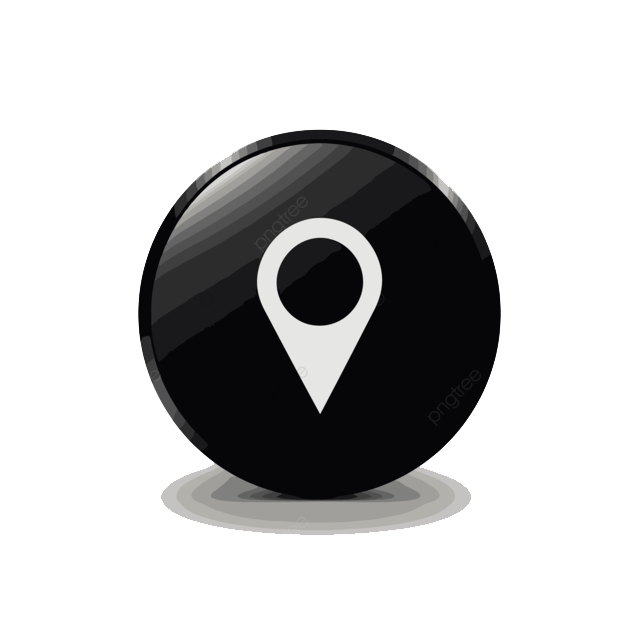

☰
✕
🚌 Linea 180
Ramales
Seleccionar / Deseleccionar todas
A - (X155) - González Catán hasta Correo Central
A - (X155) - Correo Central hasta González Catán
B - (Primera Junta) - González Catán hasta Primera Junta
B - (Primera Junta) - Primera junta hasta González Catán
C - Hasta San Alberto
C - Hasta Primera Junta
D - Hasta San Justo
D - Hasta Primera Junta